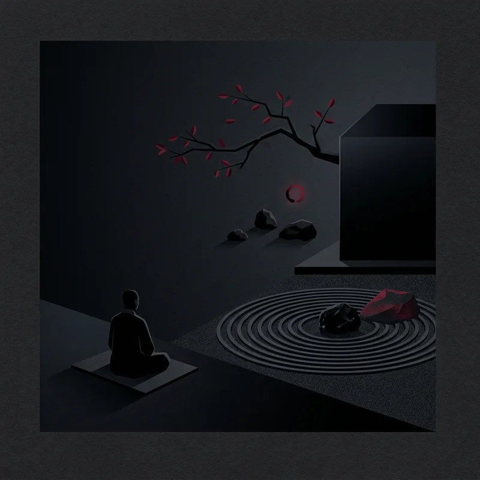

🔍 ZoomWichtige Denker
Kerngedanken
Die japanische Philosophie verbindet buddhistische Leere mit existenziellem Erleben, radikaler Präsenz im Moment (Zen) und tiefer Naturästhetik.
Wissen testen
Bist du bereit, dein Wissen über diese Epoche auf die Probe zu stellen?
Zum Quiz